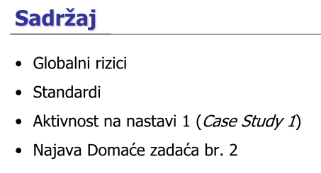

Ima li sutra predavanja? U kalendaru piše da je u cetvrtak od 8 do 10 a u obavjestima piše da je sutra s tim da nisu stavili ni u koliko sati
Atem postoje dvije grupe, ona u četvrtak je P02 pa je danas P01
Može netko tko je bio na uvodnom predavanju napisati glavne informacije i dojmove, hvala
Ima tko kakav info o upravljanju rizikom? Ima li pragova? Nisam bio na 1. Predavanju, nema ni obavijesti ni nicega na ferwebu
imas prezentaciju na materijalima
Nisam baš skužio ovo što će biti na moodleu, oće li te zadaće/blicevi biti dostupni samo u vrijeme predavanja ili će biti neko dulje vrijeme za rješavanje?
Ivančica Rekli su da ce rok bit cca tjedan dana, mislim da ce sutra u 12h otvoriti pa ce trajati do iduceg utorka u 12h.
Jel sutra uzivo predavanje?
Hoće li i zadaće/blicevi i case studyji biti preko moodlea? Predavanja nisu obavezna i ne nose nikakve bodove?
Vrba Correct on both
Postoji li sto obavezno ili kakvi pragovi iz ovog predmeta?
Jel zadace obavezno rjesavat ili je sve po volji? Vidjela sam da nema pojedinacnih pragova, ali ne kuzim jel svejedno obavezno predat ili nije.
Jesu ova predavanja četvrtkom online ili uživo?
pina_be Uzivo
Vidjela sam u trecoj prezi da je napisano pod sadrzaj neki case study 1, dal se tu nesto treba predavat ili je to samo bila neka rasprava? 
Just_some_name Na satu je bio zadatak, svi smo dobili neki papir s tekstom i trebalo je odgovorit na par pitanja, ima na nekom slajdu primjer tog teksta